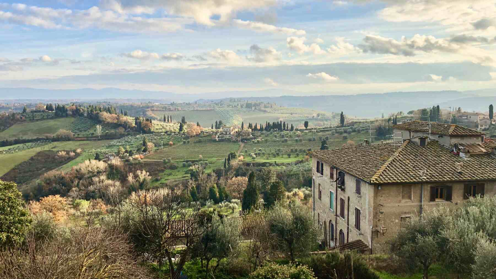
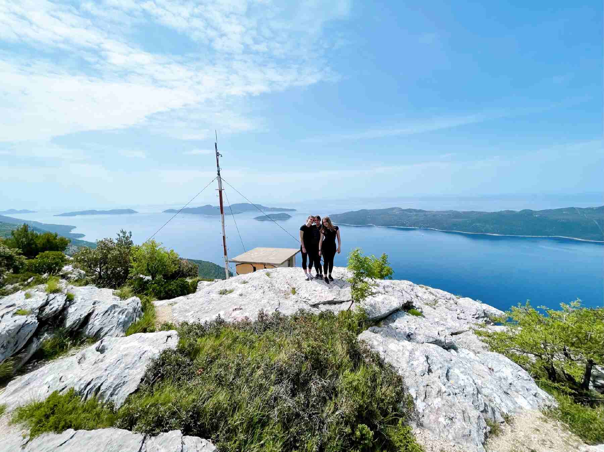
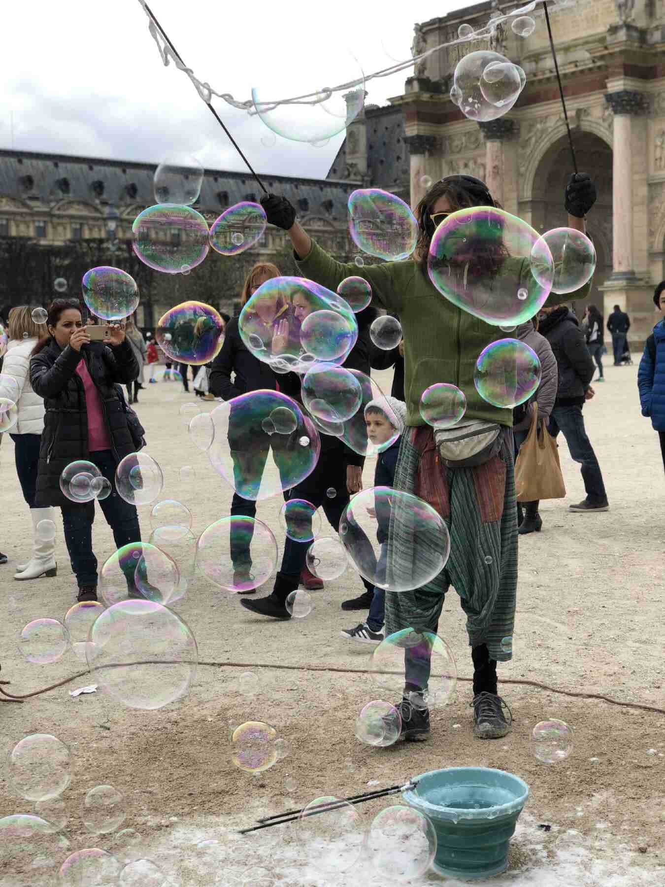

In the Spring of 2022, I studied abroad in London. So what do you think of when you hear London? Queen Elizabeth? The Royal Family? The London Bridge? Royal Guards? Here are some snapshots of London’s most timeless landmarks.
Big Ben
London Eye
Tower Bridge
Westminster Abbey
I had the opportunity to travel throughout Europe, visiting over ten countries and capturing amazing photographs along the way. These photographs capture the architectural and cultural beauty of Italy, France, London, Croatia, Greece, and more. Check out these places below:
Italy
Siena, Italy
The Leaning Tower of Pisa
Arno River in Florence, Italy
The Duomo in Florence, Italy
The Colorful Island of Burano, Italy
Venice, Italy
Rome, Italy
Rome, Italy

Siena, Italy
Dubrovnik, Croatia
The Old Town

The Elaphite Islands
The Adriatic Sea
The cliffs of Dubrovnik
Dubrovnik at night
Home of Dubrovnik
Greece
Mykonos, Greece
Athens, Greece
The Old Town of Mykonos
Mykonos, Greece
Paris, France
The Eiffel Tower
The Eiffel Tower at Night
The Palace of Versailles

The Louvre
The Louvre
The Eiffel Tower